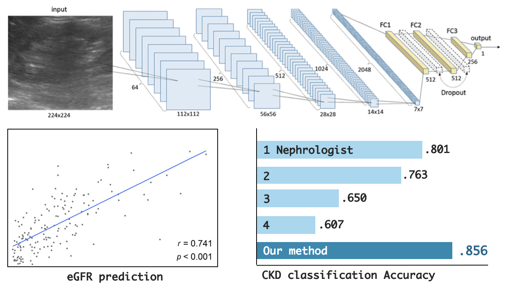
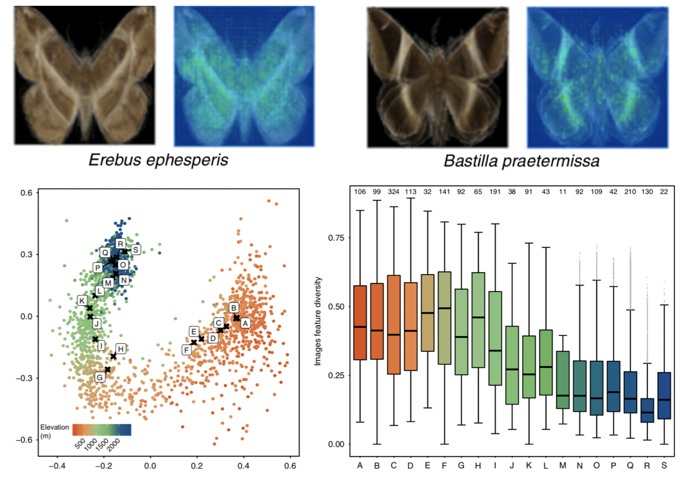
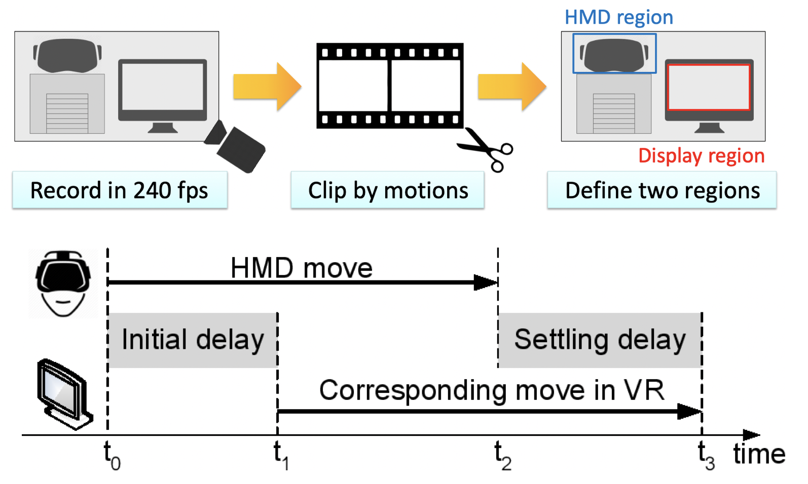

CV
CVResearch

Automation of The Kidney Function Prediction and Classification Through Ultrasound-based Kidney
Imaging Using Deep Learning
Nature Digital Medicine, 2019
paper • BibTex (show)
@article{kuo2019automation,
title={Automation of the kidney function prediction and classification through ultrasound-based kidney imaging using deep learning},
author={Kuo, Chin-Chi and Chang, Chun-Min and Liu, Kuan-Ting and Lin, Wei-Kai and Chiang, Hsiu-Yin and Chung, Chih-Wei and Ho, Meng-Ru and Sun, Pei-Ran and Yang, Rong-Lin and Chen, Kuan-Ta},
journal={npj Digital Medicine},
volume={2},
number={1},
pages={29},
year={2019},
publisher={Nature Publishing Group} }
title={Automation of the kidney function prediction and classification through ultrasound-based kidney imaging using deep learning},
author={Kuo, Chin-Chi and Chang, Chun-Min and Liu, Kuan-Ting and Lin, Wei-Kai and Chiang, Hsiu-Yin and Chung, Chih-Wei and Ho, Meng-Ru and Sun, Pei-Ran and Yang, Rong-Lin and Chen, Kuan-Ta},
journal={npj Digital Medicine},
volume={2},
number={1},
pages={29},
year={2019},
publisher={Nature Publishing Group} }
We developed a deep learning approach for automatically determining the estimated glomerular
filtration rate (eGFR) and chronic kidney disease (CKD) status. We exploited the transfer
learning technique, integrating the powerful ResNet model pretrained on the ImageNet dataset
in our network architecture, and achieved a nephrologist-level classification accuracy for
diagnosing CKD over 4,505 kidney ultrasound images.

Artificial Intelligence Reveals Environmental Constraints on Colour Diversity in Insects
Sipher Wu*, Chun-Min
Chang*, Guan-Shuo Mai, Dustin R Rubenstein, Chen-Ming Yang, Yu-Ting Huang, Hsu-Hong
Lin, Li-Cheng Shih, Sheng-Wei Chen, and Sheng-Feng ShenNature Communications (*equal contribution), 2019
paper • code • BibTex (show)
@article{wu2019artificial,
title={Artificial intelligence reveals environmental constraints on colour diversity in insects},
author={Wu, Shipher and Chang, Chun-Min and Mai, Guan-Shuo and Rubenstein, Dustin R and Yang, Chen-Ming and Huang, Yu-Ting and Lin, Hsu-Hong and Shih, Li-Cheng and Chen, Sheng-Wei and Shen, Sheng-Feng},
journal={Nature communications},
volume={10},
number={1},
pages={1--9},
year={2019},
publisher={Nature Publishing Group} }
title={Artificial intelligence reveals environmental constraints on colour diversity in insects},
author={Wu, Shipher and Chang, Chun-Min and Mai, Guan-Shuo and Rubenstein, Dustin R and Yang, Chen-Ming and Huang, Yu-Ting and Lin, Hsu-Hong and Shih, Li-Cheng and Chen, Sheng-Wei and Shen, Sheng-Feng},
journal={Nature communications},
volume={10},
number={1},
pages={1--9},
year={2019},
publisher={Nature Publishing Group} }
We demonstrated how deep learning can reveal subtle but robust patterns of colour
feature variation along an ecological gradient, as well as help identify the underlying
mechanisms generating this biogeographic pattern. Using over 20,000 images with GPS
locality information belonging to nearly 2,000 moth species, our deep learning model
learned deep representations that accurately predict each species’ mean elevation based
on colour and shape.

Efficient and Robust Convolutional Neural Networks via Channel Prioritization and Path
Ensemble
IEEE Joint Conference on Neural Networks (IJCNN), 2019
paper • BibTex (show)
@inproceedings{chang2019efficient,
title={Efficient and Robust Convolutional Neural Networks via Channel Prioritization and Path Ensemble},
author={Chang, Chun-Min and Lin, Chia-Ching and Chen, Kuan-Ta},
booktitle={2019 International Joint Conference on Neural Networks (IJCNN)},
pages={1--8},
year={2019},
organization={IEEE} }
title={Efficient and Robust Convolutional Neural Networks via Channel Prioritization and Path Ensemble},
author={Chang, Chun-Min and Lin, Chia-Ching and Chen, Kuan-Ta},
booktitle={2019 International Joint Conference on Neural Networks (IJCNN)},
pages={1--8},
year={2019},
organization={IEEE} }
We proposed a novel convolutional neural networks (CNNs) training algorithm, channel
prioritization and path ensemble (CPPE), to not only allow dynamically trade-offs between
different resource and performance requirements but also achieve robust inference without
any extra computational cost or memory overhead.

Performance measurements of virtual reality systems: Quantifying the timing and positioning
accuracy
ACM International Conference on Multimedia (ACM MM), 2016
paper • BibTex (show)
@inproceedings{chang2016performance,
title={Performance measurements of virtual reality systems: Quantifying the timing and positioning accuracy},
author={Chang, Chun-Ming and Hsu, Cheng-Hsin and Hsu, Chih-Fan and Chen, Kuan-Ta},
booktitle={Proceedings of the 24th ACM international conference on Multimedia},
pages={655--659},
year={2016},
organization={ACM}
}
title={Performance measurements of virtual reality systems: Quantifying the timing and positioning accuracy},
author={Chang, Chun-Ming and Hsu, Cheng-Hsin and Hsu, Chih-Fan and Chen, Kuan-Ta},
booktitle={Proceedings of the 24th ACM international conference on Multimedia},
pages={655--659},
year={2016},
organization={ACM}
}
We propose the very first non-intrusive measurement methodology for quantifying the
performance of commodity Virtual Reality (VR) systems. Our methodology considers the VR
system under test as a black-box and works with any VR applications. Multiple performance
metrics on timing and positioning accuracy are considered.